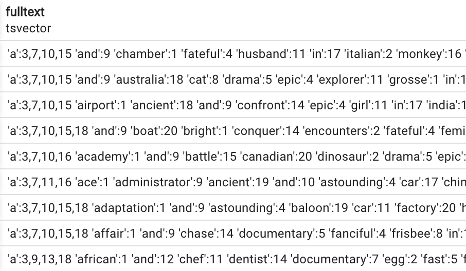
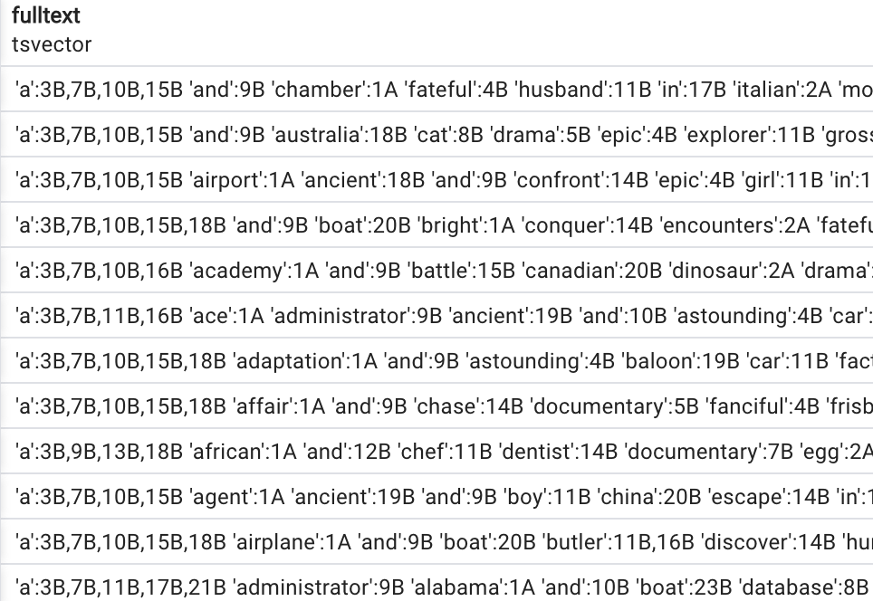
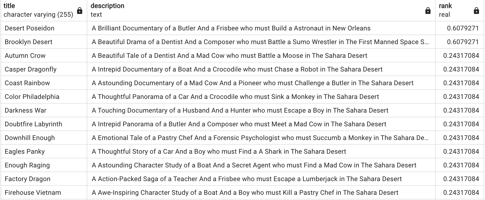
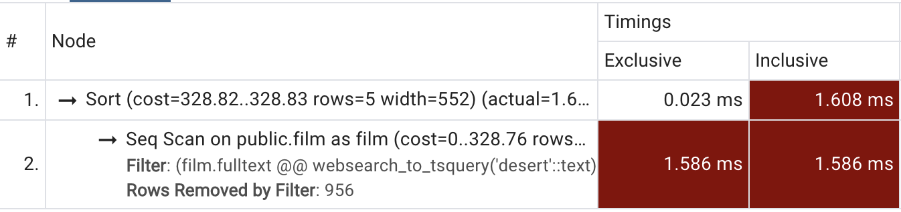
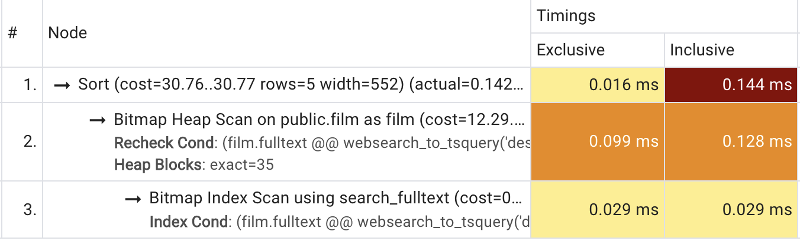

3 minutes
Multiple Column PostgreSQL Full Text Search
In Part 1 about full text search using PostgreSQL, we talked about using functions such as to_tsquery and websearch_to_tsquery, which builds upon PostgreSQL ability to decompose longer sentences to smaller chunks called lexemes using tsquery.
Now we’re going to expand our knowledge and implement multi-column full text search and add indexes for a more performant search. In this next step we want to search film titles AND film descriptions using our dvdrental database. In the stock database multi-column indexed search is already implemented but we’re going to scrap that for the sake of this tutorial:
drop index idx_fulltext;
alter table film drop column fulltext;
Creating a combined tsvector column
Doing a full text search through multiple columns is easy as combining the to_tsvector results of wanted columns into one concatenated result:
select to_tsvector(title) || ' ' || to_tsvector(description) as fulltext
from film;

1000 rows
But in this approach each column has the same ‘importance’ in our search. To optimize this we want to add more importance to our title column in front of the description. Fortunately, Postgres has this covered with the setweight function! This functions accepts two parameters, a tsvector value and a letter from A to D which determines the importance, or weight, of the column. Combining all this we get the following query:
select setweight(to_tsvector(title), 'A') || ' ' || setweight(to_tsvector(description), 'B') as fulltext
from film;

1000 rows
We could add websearch_to_tsquery to the mix from the Part 1 but the query would be too messy and hard to read. Instead, lets add a new column which is a calculated tsvector column from the combination of title and description and has a search weight added for prioritizing results. The best candidate are generated columns:
A generated column is a special column that is always computed from other columns. Thus, it is for columns what a view is for tables. - PostgreSQL documentation
alter table film
add fulltext tsvector
generated always as (
setweight(to_tsvector('simple', title), 'A') || ' ' || setweight(to_tsvector('simple', description), 'B') :: tsvector
) stored;
Note the added simple value in our to_tsvector function. We add this because PostgreSQL throws an exception if we explicitly define the ‘regional configuration’ or a dictionary which will be used for deriving lexemes. Other options are english, spanish etc. Read more about that in the official PostgreSQL documentation.
Now we can easily search through both of our columns, giving priority to the title column using websearch_to_tsquery:
select title, ts_rank(fulltext, websearch_to_tsquery('desert')) as rank
from film
where fulltext @@ websearch_to_tsquery('desert')
order by rank desc;

44 rows
Indexes
When we do a ANALYZE EXPLAIN we can see that the PostgreSQL query profiler is not happy:

Profiler is not happy
To optimize this query we can add an idex to our fulltext column. The most optimized index for a tsvector data type is called GIN and the following query will create one:
CREATE INDEX search_fulltext ON film USING GIN(fulltext);
Now when we check the profiler we can see the results are much much better:

Much better!
We got from 1.609ms to 0.144ms, that’s a huge performance improvement!
What next?
In the next part we’ll cover how to setup a REST API direct on top of our PostgreSQL db and do full text search on our data.